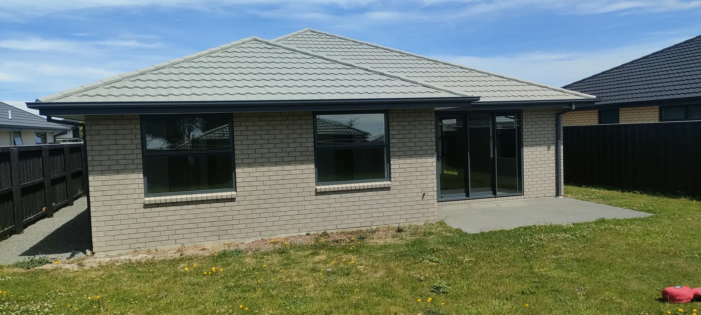

Christchurch · Canterbury
Renovations, alterations and additions in Christchurch
Matt Corcoran has been building since 1999. He also installs uPVC windows and doors, and carries out pre-purchase and pre-sale home inspections across Canterbury.
What we do
Building work for homes in Christchurch and Canterbury
Our main areas of work are renovations, alterations and additions in the residential home sector. We also install uPVC windows and doors, and carry out pre-purchase and pre-sale home inspections.

Renovations, alterations and additions
Updating and adding on to existing homes, like the large deck extension and home renovation we completed in Wanaka.
See the Wanaka projectuPVC windows and doors
Installed for clients across Canterbury. The windows and doors are manufactured and imported from overseas.
See the windows and doors
New homes
New home builds, including homes in Rolleston and Methven.
See the new homesPre-purchase and pre-sale inspections
Buying or selling a home? Matt carries out pre-purchase and pre-sale home inspections, with a written report and moisture testing results provided on completion.
Ask about an inspection- Written report on completion
- Moisture testing results
- For buyers and for sellers

About us
A small Christchurch building company
Corcoran Construction is run by Matt Corcoran, a Licensed Building Practitioner who has been building since 1999. The company is based in Christchurch and works for clients across Canterbury.
Matt came back to Christchurch a couple of weeks after the February earthquakes and took part in the rebuild of both commercial and residential properties. Since then he has built a small building company specialising in renovations, alterations and additions, uPVC windows and doors, and pre-purchase and pre-sale inspections.
- Licensed Building Practitioner (LBP)
- Building since 1999
- Christchurch based, working across Canterbury
Meet Matt
Matt Corcoran, building since 1999
Matt owns and runs Corcoran Construction. He has been a Licensed Building Practitioner (LBP) for the past 23 years.
- 1999
Started his building career on the Kapiti Coast.
- 2002
Completed an adult apprenticeship.
- Ten years
Worked for Cox and Sweetman Builders.
- Wellington
Went into business for himself, contracting to builders around the region.
- Christchurch
Came back a couple of weeks after the February earthquakes and took part in the rebuild.
- Today
Runs Corcoran Construction, a small building company working across Canterbury.
Our work
Projects from Rolleston to Wanaka
A few of the jobs Matt has completed over the years. Open a project to see all of its photos.

Deck extension and home renovation
A large deck extension and home renovation, from framing the new deck to a finished bathroom.
See 4 photos
uPVC windows and doors
uPVC windows and doors, manufactured and imported from overseas, installed for clients across Canterbury.
See 3 photos
New home build
A new brick home in Rolleston, front and back.
See 2 photos
New home build
A new home build in Methven.
See the photoClient comments
What clients say
Two clients on working with Matt, in their own words.
Matt undertook a large renovation and deck extension of our property in Wanaka. His professional approach to the project was great and offered good solutions in order to achieve what we wanted. The project was completed on time and to budget and has allowed us to enjoy our time there so much more.
Corcoran Construction Ltd completed a major renovation of our home in Redcliffs, Christchurch. We were looking for a building company we could work alongside as we wanted to have a part in the work ourselves and they were recommended by one of the suppliers we had spoken to. We were impressed with his professional approach both in the initial consultation where we outlined our plans through to the completed project including the installation of new uPVC windows and doors. Matt took care of the project management for the job and his team of subcontractors were also very professional, friendly and easy to get along with.
What areas do you cover?
We're based in Christchurch and work for clients across Canterbury. Past projects include new homes in Rolleston and Methven, and a large deck extension and home renovation in Wanaka.
Do you do renovations, alterations and additions?
Yes. Renovations, alterations and additions in the residential home sector are our main areas of work. Our Wanaka project, for example, was a large deck extension and home renovation.
Do you install uPVC windows and doors?
Yes. We specialise in installing uPVC windows and doors, manufactured and imported from overseas, for clients across Canterbury.
What does a pre-purchase or pre-sale inspection include?
Matt carries out pre-purchase inspections for buyers and pre-sale inspections for sellers. On completion you get a written report, along with the moisture testing results.
Are you a Licensed Building Practitioner?
Yes. Matt Corcoran has been a Licensed Building Practitioner (LBP) for the past 23 years. He began his building career on the Kapiti Coast in 1999, completing an adult apprenticeship in 2002 and working for Cox and Sweetman Builders for ten years.
How do I get a quote?
Call Matt on 027 223 0890 or email corcoranbuilder@gmail.com. Let him know what you're planning and where the property is.
Contact
Talk to Matt about your project
Planning a renovation or new uPVC windows and doors, or need a pre-purchase or pre-sale inspection? Give Matt a call or send him an email.
- 027 223 0890
- corcoranbuilder@gmail.com
- Based in Christchurch, working across Canterbury
The email button opens a new Gmail message with a few prompts to fill in.
Based in Christchurch
Working for clients across Canterbury.